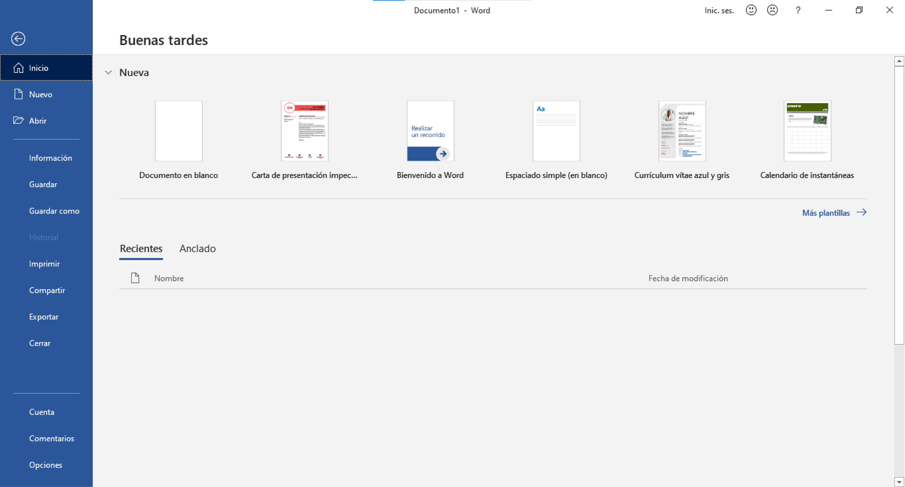
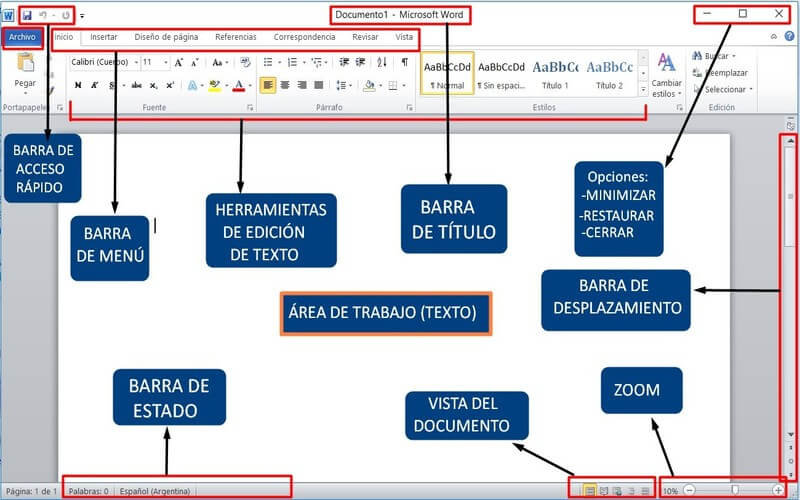
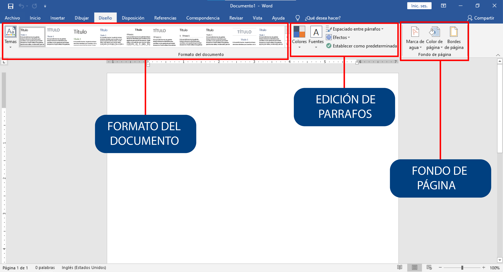
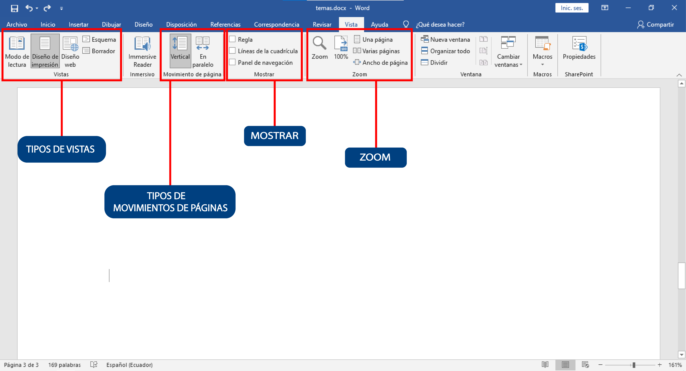
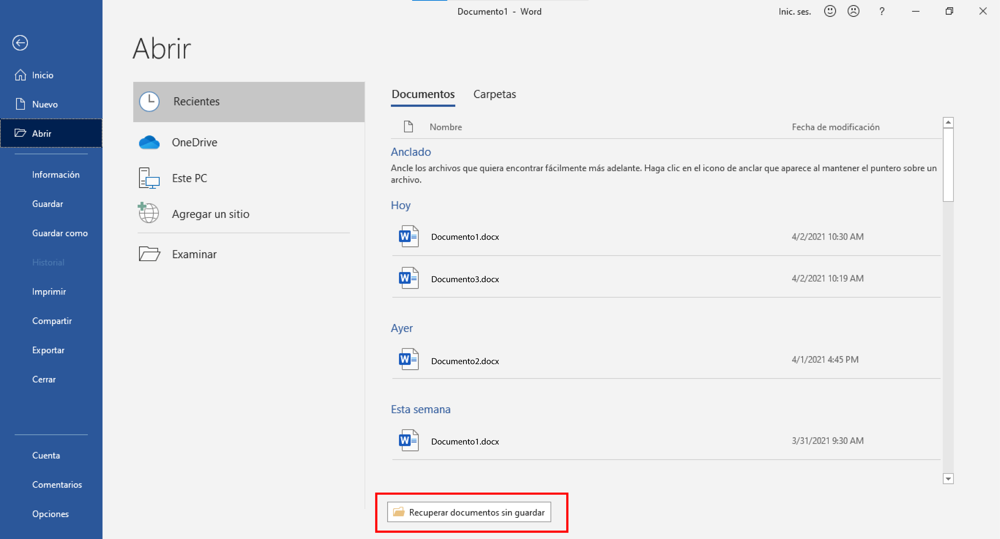

GUÍA PARA USAR MICROSOFT WORD
¿Qué es Microsoft Word?
Microsoft Word es un procesador de texto que nos permite trabajar de manera muy sencilla a la vez que nos ofrece infinidad de herramientas. No solo es útil para crear textos, también permite añadir imágenes, crear tablas y gráficos, entre otras cosas.
¿Cómo ingresar a Microsoft Word?
Para poder ingresar a este procesador de texto, debemos tenerlo instalado
en la computadora. Algunas notebooks traen el programa ya instalado, pero
la mayoría no. En caso de no tenerlo, lo mejor es preguntar a alguien con más
conocimiento para que nos asesore sobre cómo instalarlo. O buscar en YouTube
un video tutorial de como instalar Word.
Una vez instalado, para ingresar a él seguimos estos pasos:
1.Si tenemos el icono en el escritorio de la computadora, hacemos doble clic izquierdo sobre él.
2.Si no tenemos el icono, buscamos el programa mediante la lupa de búsqueda.
3.Hacemos clic en la lupa que aparece en la barra de herramientas y escribimos su nombre.
Reconociendo el escritorio de Microsoft Word
A continuación vamos a conocer los principales elementos que te van a permitir usar Microsoft Word:
• Nueva: nos ofrece la plantilla en blanco que sería la plantilla por defecto que tenemos al abrir un documento en Microsoft Word. Además de eso nos ofrece una variedad de plantillas para hacer portadas, currículums, calendarios, cartas de presentación, etc.
• Recientes: es donde se almacenan los accesos directos de los archivos que hemos manipulado recientemente.
• Anclado: es donde se almacenan los archivos que nosotros hemos destacado. Seria nuestra parte de mensajes destacados en WhatsApp.
Inicio
• Área de trabajo: es el espacio donde vamos a escribir. Tiene la apariencia de una hoja en blanco. Allí aparecerá todo lo que vayamos creando.
• Barra de acceso rápido: son tres iconos que nos permiten hacer tres acciones rápidas. Ellas son Guardar, Deshacer y Rehacer. La primera nos permite ir guardando el archivo y las otras dos nos dan la posibidad de deshacer o rehacer algún cambio que hayamos hecho.
• Barra de menú: esta barra es un conjunto de pestañas que nos va a permitir trabajar sobre diferentes elementos del archivo. Siempre, por defecto, estaremos trabajando en la pestaña Inicio, la cual cuenta con todas las funciones básicas y principales.
• Herramientas de edición de texto: son todas las herramientas para editar el texto. Por ejemplo, subrayar, resaltar, cambiar el color y tamaño, entre otras cosas.
• Barra de título: éste es el espacio donde aparecerá el título del archivo sobre el que estamos trabajando. Es el nombre que le dimos al archivo al guardarlo, mientras no lo guardemos solo dirá “Documento”.
• Barra de estado: esta área nos indica la cantidad de palabras que llevamos escritas y el estado del archivo (si acaba de guardarse, por ejemplo, se indica en ese espacio).
• Vista del documento: son las diferentes opciones que ofrece Word para ver el documento en la pantalla.
• Barra de desplazamiento: es lo que nos permite movernos hacia arriba y hacia abajo en el archivo. La usamos haciendo clic en las flechitas.
• Zoom: nos permite alejar o acercar el área de trabajo para verlo más o menos grande.
Diseño
• Temas: permite seleccionar un nuevo tema para proporcionar al documento un estilo inmediato y exacatamente la persoanlidad que deea.
• Colores: permite cambiar rápidamente todos los colores que se usan en el documento eligiendo una paleta de colores diferentes.
• Fuentes: cambia rápidamente el aspecto de todo el documento seleccionando un nuevo juego de fuentes.
• Espaciado entre párrafos: permite cambiar rápidamente el interlineado y el espaciado entre párrafos del documento.
• Efectos: cambia rápidamente el aspecto general de los objetos del documento.
• Marca de agua: agrega un texto fantasma, como “Confidencial” o “Urgente” detrás del contenido de la página.
• Color de página: da un toque de color al documento cambiando el color de la página.
• Bordes de página: agrega o cambia el borde alrededor de la página. Un borde atrae la atencion y agrega un toque elegante al documento.
Vista
• Modo de lectura: la mejor forma de leer un documento.
• Diseño de impresión: ver el aspecto del documento cuando se imprima.
• Diseño web: ver el aspecto del documento como página web, este tipo de vista es muy útil si nuestro documento tiene tablas anchas.
• Vertical: desplácese arriba y abajo para cambiar de página.
• En paralelo: para ver páginas completas, deslice cada página de derecha a izquierda o de izquierda a derecha.
• Regla: muestra reglas juntos al documento. Permite ver y establecer tabulaciones, mover bordes de tablas y alinear objetos en el documento. También permite medir otros elementos.
• Líneas de la cuadricula: muestra las líneas de la cuadricula en el fondo del documento para mejorar la colocación de los objetos. Las líneas de cuadricula facilitan la alineación de los objetos con otros objetos o con un punto en concreto en la página.
• Panel de navegación: es como una guía turística por el documento.
• Zoom: acerque o aleje el documento a la distancia que le sea más cómoda.
• Una página: acerca el documento para poder ver toda la página en la ventana.
• Varias páginas: aleja la vista en el documento para que pueda ver dos páginas en la ventana.
• Ancho de página: Acerca el documento para que el ancho de la página coincida con el ancho de la ventana.
Abrir
• Recientes: estarán a la mano los archivos que hemos manipulado recientemente.
• OneDrive: sí tenemos enlazada nuestra cuenta de OneDrive, podemos elegir entre todos los documentos de textos que tengamos almacenados en nuestro OneDrive.
• Este PC: podremos
• Recuperar documentos sin guardar: al hacer clic sobre Recuperar documentos sin guardar se
nos abrirá una pestaña donde nos mostrará los archivos que hemos manipulado recientemente y no hemos guardado.
Ejemplo: